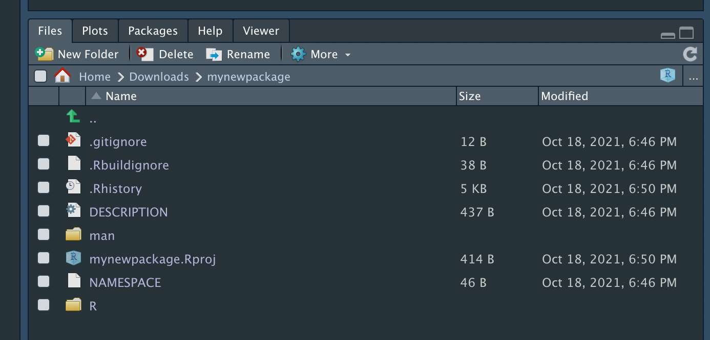
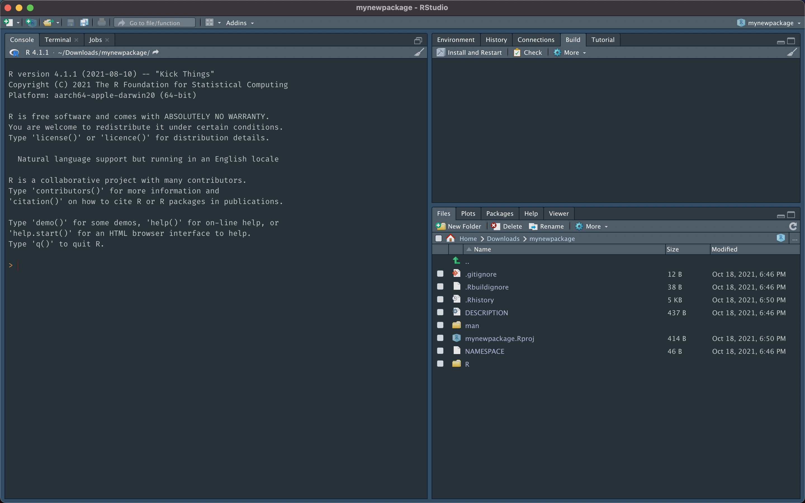
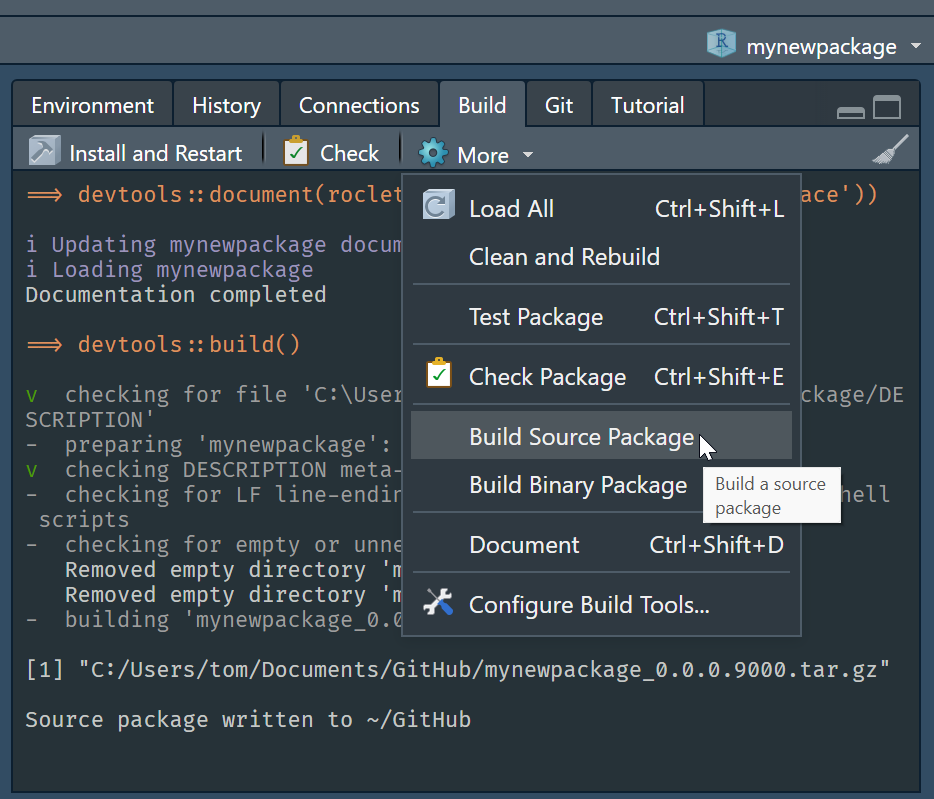
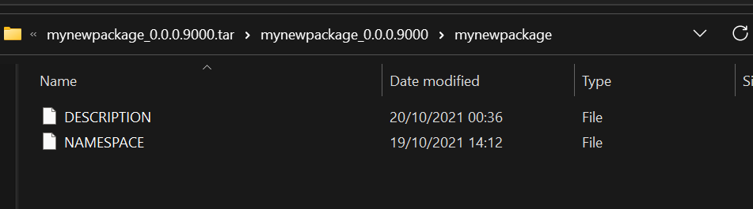

Create
- Create a new package by first installing
devtoolsand then running
devtools::create()- This will generate
> devtools::create(path = ".")
✓ Setting active project to '/Users/tom/Downloads/mynewpackage'
✓ Creating 'R/'
✓ Writing 'DESCRIPTION'
Package: mynewpackage
Title: What the Package Does (One Line, Title Case)
Version: 0.0.0.9000
Authors@R (parsed):
* First Last <first.last@example.com> [aut, cre] OUR-ORCID-ID)
Description: What the package does (one paragraph).
License: `use_mit_license()`, `use_gpl3_license()` or friends to
pick a license
Encoding: UTF-8
Roxygen: list(markdown = TRUE)
RoxygenNote: 7.1.2
✓ Writing 'NAMESPACE'
✓ Writing 'mynewpackage.Rproj'
✓ Adding '^mynewpackage\\.Rproj$' to '.Rbuildignore'
✓ Adding '.Rproj.user' to '.gitignore'
✓ Adding '^\\.Rproj\\.user$' to '.Rbuildignore'
✓ Setting active project to '<no active project>'- As seen in RStudio File pane (nb. even though there is a
.gitignorefile this folder is not initialised as a git repo yet - look for.gitfolder)
 - Double click the
.Rprojfile to open in RStudio as an RStudio project - this gives you the very helpful Build pane  - If you are working on an existing package define folder/repo as an RStudio project (
.Rprojfile) to get the very helpful Build pane- https://support.rstudio.com/hc/en-us/articles/200526207-Using-Projects
- Key line in the
.Rprojfile is:BuildType: Package(None/Package/Makefile/Website/Custom) - Build pane appears for all butNone
- Initialise the folder as a Git repo:
usethis::use_git() - Now edit/complete the obvious fields in the
DESCRIPTIONfile - Not all of these files will be put into our package, e.g., when we build the source package at the moment only the
DESCRIPTIONandNAMESPACEfiles are included (as ourRandmandirectories are empty)
 - To prove the contents of the
.tar.gzfile are currently only
